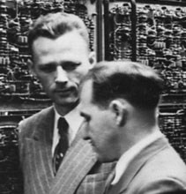
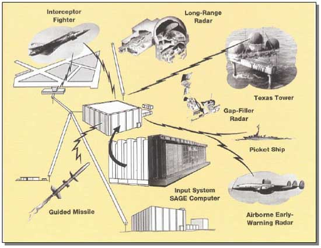

Jay Forrester, inventeur de la mémoire à tores magnétiques, tenant un plan de mémoire de 64 x 64.
Picture used with the permission of the MITRE Corporation. Copyright © The Mitre Corporation. All Rights reserved.
Alors que l'informatique est née au milieu des années 1940 aux Etats-Unis, le développement de ses applications graphiques en temps réel commence en 1946 au Massachusetts Institute of technology (MIT) avec le Whirlwind qui est le premier ordinateur à posséder un système d'affichage graphique en temps réel (écran à tube cathodique). Le Gouvernement américain finance le projet dès 1944 pour des objectifs de défense nationale.
Le Whirlwind est certes le premier ordinateur numérique du MIT, mais il est surtout :
L'histoire du Whirlwind peut être divisée en deux périodes interreliées mais distinctes.
Jay Forrester, inventeur de la mémoire à tores magnétiques, tenant un plan de mémoire de 64 x 64.
Picture used with the permission of the MITRE Corporation. Copyright © The Mitre Corporation. All Rights reserved.
A la fin des années 1944, sur mandat de la Marine américaine (au Centre des engins spéciaux), des chercheurs du Massachusetts Institute of technology (MIT) dirigés par Jay Wright Forrester (jeune ingénieur du Nebraska) travaillent au développement d'ASCA, un ordinateur analogique devant être intégré à un simulateur de vol polyvalent pour entrainer les équipages des bombardiers. Le système doit être capable de mettre à jour, en continu, un tableau de bord simulé sur la base des commandes entrées par les pilotes et du comportement de l'avion. Pour faire fonctionner le simulateur dans des conditions réalistes, il faut résoudre simultanément, et en temps réel, de nombreuses équations comportant plus d'une centaine de variables. Après une année de travaille les chercheurs réalisent que la tâche est d'une complexité insurmontable pour ASCA. Le projet analogique doit être abandonné et doit évoluer de façon radicale. Jerry Crawford, membre de l'équipe, montra sur un ordinateur travaillant en mode batch (l'ENIAC), c'est à dire par lots en temps diffféré, que ces difficultés pouvaient êtres surmontées avec un ordinateur numérique.

Vue large de la salle du Whirlwind I pleinement opérationnel (27 septembre 1951).
Picture used with the permission of the MITRE Corporation. Copyright © The Mitre Corporation. All Rights reserved.
Ainsi sur cette base, en juin 1946, Jay Forrester s'oriente vers la conception d'un véritable calculateur électronique et digital, un ordinateur numérique, le Whirlwind. Pour répondre aux exigences de la marine, le Whirlwind doit fonctionner dans les simulateurs de vol comme mécanisme de contrôle en temps réel. Une nouvelle forme d'ingénierie numérique, basée sur des traitements et des actions en temps réel, allait naître. L'équipe chargée de construire le Whirlwind est dirigée par Jay Forrester, entouré de Charles W. Adams, Robert Evereet et Ken Olsen. La conception et la construction durèrent de 1946 à 1955 et connurent plusieurs évolutions profondes. La recherche de la performance, de la fiabilité et de la rapidité de réponse dans cet ordinateur ont amené de grands progrès en informatique. La construction a commencé avec une équipe de 175 personnes, y compris 70 du personnel technique.

Norman Taylor examine le Multiplicateur à 5 digits du Whirlwind (21 0ctobre 1948)
Ayant démontré ses qualités de vitesse, d’exactitude et de fiabilité en temps réel, le multiplicateur à cinq chiffres était un pas en avant de géant. Le célèbre mathématicien de Princeton, John Von Neumann, qui développait également un ordinateur pour ONR, a visité le MIT en 1948 peu de temps après que le multiplicateur ait accompli 5 milliards de multiplications sans erreur. En voyant la machine fonctionner, il est devenu tellement excité qu’il a embrassé Norman Taylor sur les deux joues.
Picture used with the permission of the MITRE Corporation. Copyright © The Mitre Corporation. All Rights reserved.
Le premier Whirlwind opérationnel est disponible le 20 avril 1951. A ce moment la Marine américaine a perdu l'intérêt pour le Whirlwind, mais l'Armée de l'Air prend le relai pour son développement.
A ce stade du développement, le Whirlwind met en place la première pièce du puzzle de l'interface utilisateur graphique (Desktop) et du Dessin Assisté par Ordinateur (DAO) modernes : un tube cathodique capable d'afficher des graphiques en temps réel.
Ayant démontré ses qualités de vitesse, d'exactitude et de fiabilité en temps réel, le multiplicateur à cinq chiffres était un pas en avant de géant. Le célèbre mathématicien de Princeton, John Von Neumann, qui développait également un ordinateur pour ONR, a visité le MIT en 1948 peu de temps après que le multiplicateur ait accompli 5 milliards de multiplications sans erreur. En voyant la machine fonctionner, il est devenu tellement excité qu'il a embrassé Norman Taylor sur les deux joues. Picture used with the permission of the MITRE Corporation. Copyright © The Mitre Corporation. All Rights reserved.)
Jay Forrester (à gauche debout) et Norman Taylor (à gauche, pointant du doigt) en 1952.
Picture used with the permission of the MITRE Corporation. Copyright © The Mitre Corporation. All Rights reserved.

Jay Forrester à gauche et Norman Taylor à droite en 1952
Picture used with the permission of the MITRE Corporation. Copyright © The Mitre Corporation. All Rights reserved.
Le 30 juin 1959, le Whirlwind cessa officiellement d'être opérationnel.
Norman Taylor a rejoint le projet du Whirlwind en 1947 au « Laboratoire de calculateur numérique » du MIT. En 1951, il est allé au Laboratoire Lincoln comme directeur associé de la Division d'ordinateur. Il y était responsable du MTC, Fsq-7, Tx-1, et Tx-2. Norman Taylor est l'un des acteurs principaux qui ont conçu le SAGE au Laboratoire Lincoln. Il travaillerat également avec l'infrastructure du SAGE.

Système de défense aérienne SAGE - R&D 1951-1957.
Source : ATC Surveillance - A Retrospective Look. Raymond R. LaFrey, Air Traffic Control Program Manager, MIT Lincoln Laboratory, 17 April 2002-1, NASA GRC CNS Conference.
En septembre 1949, l'Union soviétique fait exploser sa première bombe atomique en Sibérie profonde et leurs bombardiers à longue portée, justement présents sur les bases aériennes russes, étaient capables de « livrer » une charge nucléaire utile en profondeur sur le terrritoire des Etats-Unis. Cela changeait radicalement la situation. Il était évident, pour la communauté de la Défense et d'autres, que les USA étaient en grand danger. Ils se sont donc rapidement organisés pour développer des stratégies de défense et de réplique. Le complexe militaro-industriel américain décide de faire appel aux chercheurs du MIT pour élaborer des systèmes de défense au sol destinés à protéger les Etats-Unis contre toute attaque nucléaire. Ainsi, en décembre, 1949, le MIT est approché par l'Armée de l'Air pour la conception et l'établissement d'un réseau automatisé de défense aérienne. Ce réseau devrait détecter une attaque ennemie assez tôt ainsi la riposte appropriée pourrait être lancée. En 1950 éclate la guerre de Corée. Cela stimule davantage les Etats-Unis pour leur défense aérienne et des subventions de recherche d'une importance équivalente à celle de la 2ème Guerre mondiale se déclenchent.
L'Air Force américaine engage alors plusieurs projets et mandate en 1949 le professeur George Valley du MIT pour un système de défense aérienne. A partir d'échos radars, un tel système doit permettre par triangulation en temps réel de déterminer la position, la direction et la vitesse de multiples avions. Pour résoudre les importants problèmes de calcul ainsi posés, George Valley choisit de les surmonter avec un ordinateur numérique et se tourne vers le projet Whirlwind.
George Valley et Jay Forrester se rencontrent pour élaborer, « sur mandat de L'Air Force », un plan de défense aérienne du territoire national sur base d'ordinateurs centraux, afin de contrôler les radars et de coordonner les ripostes adéquates en cas d'attaque de bombardiers soviétiques. Ce projet portera l'acronyme SAGE : Semi Automated Ground Environment (environnement au sol semi-automatisé).
Le Whirlwind devient alors la pierre angulaire du projet SAGE, qui à son tour deviendra la pierre angulaire de la défense des Etats-Unis. En 1951, l'hybride Whirlwind/SAGE passe son premier essai officiel : il a correctement identifié et tracé des trajectoires d'interception pour huit objets simultanés au-dessus du territoire des Etats-Unis. Ces données auraient été disponibles pour d'autres installations, si elles avaient existé. Quand le réseau entier a été relié plus tard aux installations sophistiquées de missiles, SAGE est devenu un système de défense aérien formidable.
En 1957, les Russes lancent leur premier satellite artificiel, le Spoutnik-1. Les USA le perçoivent comme une aggravation de la menace nucléaire et un défi à la fois scientifique et technologique. Ils réagissent en créant l'agence ARPA. Son objectif est de court-circuiter les procédures traditionnelles de financement de la recherche et permettre ainsi aux projets les plus avant-gardistes d'être directement financés.
Opérateur interceptant les coordonnées d'une cible potentielle avec le pistolet lumineux (1959)
Picture used with the permission of the MITRE Corporation. Copyright © The Mitre Corporation. All Rights reserved.
La clef du succès de SAGE est le développement d'un modèle de série du Whirlwind. IBM gagne le contrat pour concevoir et établir le Whirlwind II, autrement connu sous l'appellation IBM FSQ-7, pour le nouveau système de défense aérien proposé devant relier tous les sites radar nords américains.
Le FSQ-7 utilise plus de 49.000 tubes à vide, il pèse 250 tonnes et exige une alimentation de 3'000 kW.
Le premier centre SAGE est opérationnel en 1958 sur base d'ordinateurs IBM FSQ-7 créés à partir du prototype Whirlwind I de Jay Forrester.
Ecran vectoriel avec des spots géographiques générés par le Whirlwind I (1953).
Les directions et les longueurs des vecteurs indiquent la direction et la vitesse des avions.
Picture used with the permission of the MITRE Corporation. Copyright © The Mitre Corporation. All Rights reserved.
Les opérateurs des ordinateurs Whirlwind et IBM FSQ-7 utilisent des « pistolets de lumière » (capteurs de type cellules photo-élerctriques, précurseurs du stylo lumineux) pour désigner des spots (les cibles) sur leurs écrans radar (tube CRT), représentations symboliques des bombardiers soviétiques à intercepter.
Exemple de manipulation : Le Whirlwind reçoit des données de position concernant un avion depuis une station de radars dans le Massachusetts. Une série de points de repères, affichée sur l'écran représentent la côte orientale du Massachusetts. L'avion est représenté par un symbôle superposé au-dessus du schéma géographique à l'écran du tube cathodique. Pour demander des informations d'identification concernant l'avion, l'opérateur utilise le pistolet de lumière. Lorsqu'il pointe le pistolet sur le symbole de l'avion à l'écran, les requêtes adéquates sont transmises au Whirlwind, lequel identifie l'avion, calcule sa position, sa direction et sa vitesse et affiche le tout sur l'écran CRT en mode alphanumérique.
Ecran d'identification typique sur l'écran d'une situation SAGE (23 novembre 1953).
Picture used with the permission of the MITRE Corporation. Copyright © The Mitre Corporation. All Rights reserved.
Chaque Centre SAGE abrite deux ordinateurs IBM FSQ-7, l'un suppléant les pannes de l'autre. Sur un étage, ils occupent 2'000 m2, 70 armoires renfermant 58'000 tubes à vide pour un poid total de 270 tonnes. Les stations de visualisation et l'équipement téléphonique occcupent une autre surface de 2'000 m2. Il faut ajouter une centrale électrique autonome, un système de climatisation et les commutateurs téléphoniques. En 1961 il y a 23 Centres SAGE en fonctionnement qui relaient tous les sites de radars nord américains.
Grâce à la mise en œuvre couplée de l'écran graphique (250 x 250 points) et du pistolet optique (plus tard stylo optique), l'interaction homme-machine directe et simultanée devient possible, augmentant la polyvalence et l'utilité des ordinateurs.
A ce stade du développement, l'hybride Whirlwind/SAGE met en place la deuxième pièce du puzzle de l'interface utilisateur graphique (Desktop) et du Dessin Assisté par Ordinateur (DAO). Il constitue même le premier projet en simulation, considéré comme l'ancêtre direct de la réalité virtuelle. Cependant, pour que le système marque véritablement l'avènement du graphisme informatique moderne, le système doit évoluer afin de dépassser une interactivité d'action et permettre une interactivité de création à l'écran, à savoir dessiner, copier, coller, etc. sans d'autres recours que ceux qui sont offerts par le système lui-même à partir du seul couple pointeur-écran de visualisation.